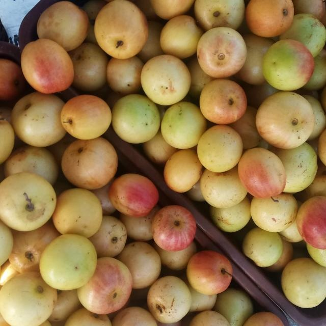
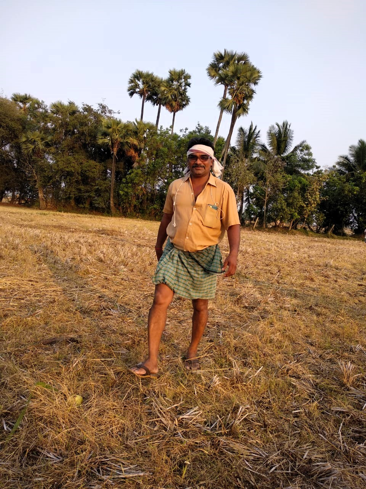

Farm-fresh seasonal fruits. Delivering the authentic flavor of Repalle directly to your table.
Contact for Bulk Orders"Made in Repalle" is committed to supporting local farmers and showcasing the unique quality of our region's fruits.
We harvest fruits at their peak, ensuring you experience the true taste of the Indian soil and sunshine. ☀️🇮🇳
Get ready for a delightful variety of fruits throughout the year, starting with our premium Regi Pallu.
We are building a brand that puts Repalle on the map for high-quality, hybrid agriculture.
Combining age-old farming wisdom with modern digital platforms to bring Repalle's finest directly to the world.

We are revolutionizing the traditional Regi Pandu. Our hybrid variety (Bala Sundari) is sized between an apple and a jujube. It combines the crunch of an apple with the sweet, nostalgic tang of the traditional fruit.
Current Status: We have successfully launched and gained a great reputation in the region. We are now expanding our offerings.
Located in the heart of the Repalle delta, Andhra Pradesh.
A family initiative bridging traditional farming with modern supply chains.
Proudly representing the agricultural families of Yalavarthi and Talasila.

FOUNDER & PROPRIETOR
Our Founder is a true Raithu (Farmer). With decades of experience working the rich soil of the Repalle delta, Suresh Babu embodies the deep respect for the land that defines our family legacy.
He leads all agricultural strategy and on-site operations, ensuring every harvest meets the highest standards of quality before it reaches your table.
We specialize in bulk orders. Please fill out your details, and we will call you to discuss pricing and delivery.